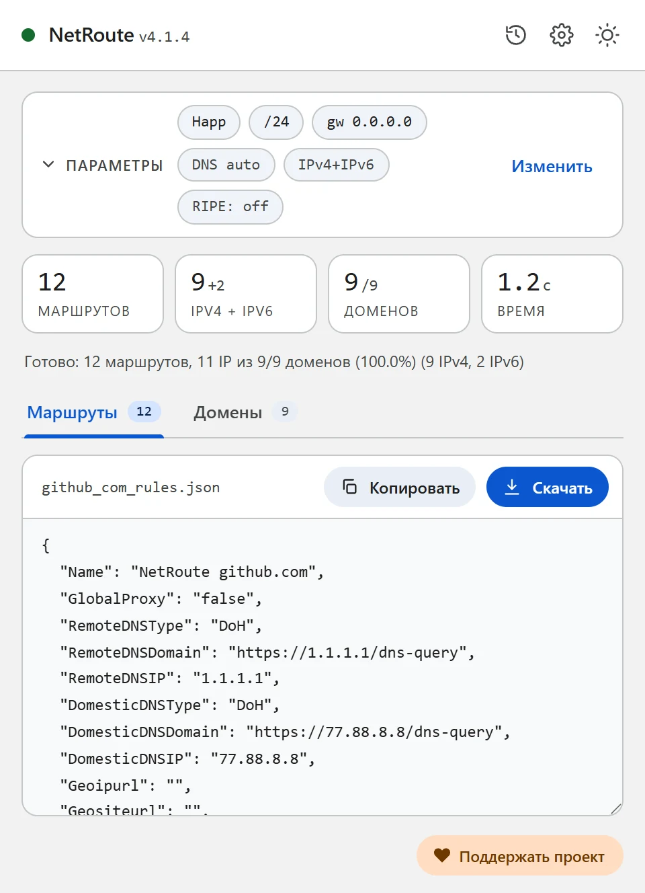
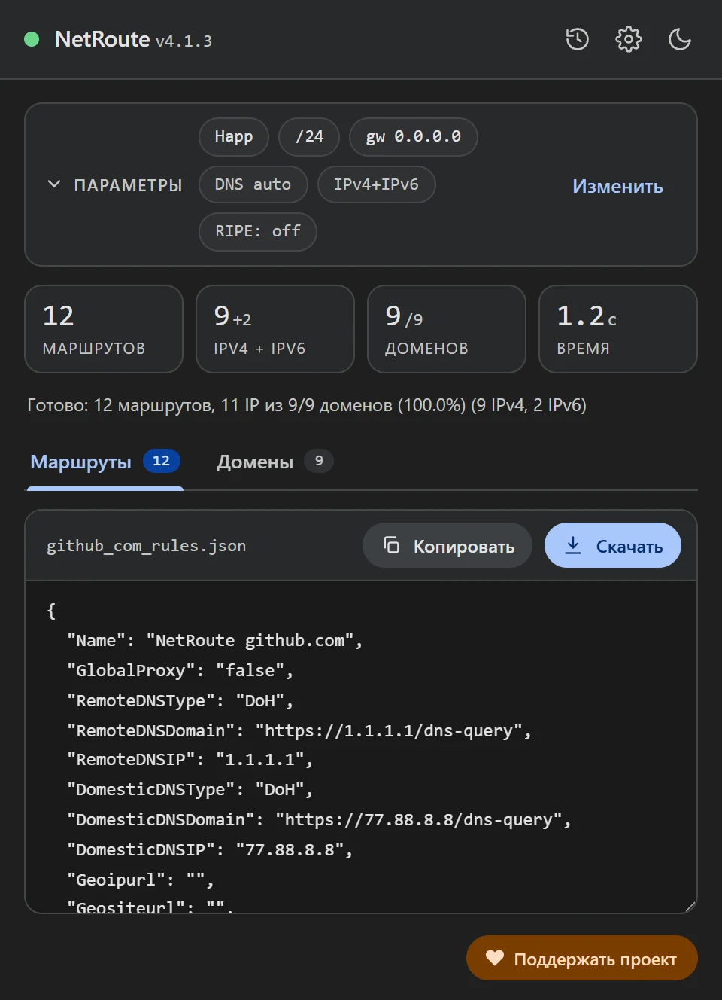

Профиль маршрутизации Happ из любого сайта
Обновлено · NetRoute версии 4.1.4
Happ — кроссплатформенный клиент на ядре Xray для Windows, macOS, Linux, iOS, Android и ТВ-платформ. Что пускать через прокси, он решает по профилю маршрутизации: спискам доменов и адресов. NetRoute собирает такой профиль со страницы сайта в формате JSON, а в приложение он попадает ссылкой happ://routing/onadd/….
Что внутри файла
Профиль маршрутизации Happ — это JSON с настройками DNS, geo-файлов и шестью списками: что через прокси, что напрямую, что блокировать — отдельно для доменов и для адресов. NetRoute заполняет списки прокси и оставляет остальное в значениях, которые Happ принимает по умолчанию:
{
"Name": "NetRoute github.com",
"GlobalProxy": "false",
"RemoteDNSType": "DoH",
"RemoteDNSDomain": "https://1.1.1.1/dns-query",
"RemoteDNSIP": "1.1.1.1",
"DomesticDNSType": "DoH",
"DomesticDNSDomain": "https://77.88.8.8/dns-query",
"DomesticDNSIP": "77.88.8.8",
"Geoipurl": "",
"Geositeurl": "",
"LastUpdated": "1760572800",
"DnsHosts": {},
"RouteOrder": "block-proxy-direct",
"DirectSites": [],
"DirectIp": ["geoip:private"],
"ProxySites": ["domain:github.com", "domain:githubusercontent.com"],
"ProxyIp": ["140.82.112.0/20", "185.199.108.0/22", "2606:50c0::/32"],
"BlockSites": [],
"BlockIp": [],
"DomainStrategy": "IPIfNonMatch",
"FakeDNS": "false"
}Что означают поля — по документации Happ:
GlobalProxy— приtrueвесь трафик по умолчанию идёт через прокси, приfalse— напрямую; это же значение определяет выход для всего, что не попало ни в одно правило. NetRoute ставитfalse: через прокси идут только перечисленные сайты.ProxySites/ProxyIp— домены и адреса, которые идут через прокси. Домены записаны в формеdomain:имя— по документации Xray это сам домен и все его поддомены; список свёрнут,www.отброшен. Адреса — те же агрегированные сети, что NetRoute выдаёт маршрутами для роутера, IPv4 и IPv6.DirectSites/DirectIpиBlockSites/BlockIp— напрямую и блокировать; NetRoute оставляет напрямую только частные адреса (geoip:private).RouteOrder— порядок проверки правил: сначала блокировка, затем прокси, затем прямое подключение.DomainStrategy— стратегия Xray:IPIfNonMatchразрешает домен в адрес только если по имени правило не нашлось.RemoteDNS*/DomesticDNS*— DNS для сайтов через прокси и для остальных;DoH— DNS-over-HTTPS. Значения можно поменять в файле до импорта.Geoipurl/Geositeurl— ссылки на geoip.dat и geosite.dat; пустые значения Happ заполняет из профиля по умолчанию.LastUpdated— дата в формате Unix; профиль обновляется, если она больше предыдущей. NetRoute ставит время генерации.DnsHosts— ручные соответствия «домен: IP», аналог файла hosts; у NetRoute пуст.


Что понадобится
- Приложение Happ с добавленным сервером (Windows, macOS, Linux, iOS, Android, Android TV или Apple TV)
- Расширение NetRoute в Chrome
- Способ закодировать файл в base64 — команда есть в каждой системе, примеры ниже
Шаг 1. Сгенерируйте профиль в NetRoute
- Откройте нужный сайт в Chrome и обновите страницу, чтобы сниффер расширения увидел фоновые запросы
- Запустите NetRoute
- В списке Целевая ОС выберите Happ — группа «Прокси-клиенты»
- Поля IP шлюза и Интерфейс на этот формат не влияют
- Нажмите Анализировать сайт
- На вкладке Домены снимите галочки с лишнего — счётчики, рекламные сети, чужие CDN; профиль пересчитается сразу
- Нажмите Скачать: файл называется по сайту, например
github_com_rules.json
Шаг 2. Соберите ссылку happ://routing/…
По документации Happ профиль добавляется ссылкой, где {base64} — JSON-профиль, преобразованный в текст base64:
happ://routing/add/{base64}— добавляет профиль в список;happ://routing/onadd/{base64}— добавляет и сразу активирует, даже если активен другой профиль.
Закодируйте скачанный файл:
# Windows, PowerShell
[Convert]::ToBase64String([IO.File]::ReadAllBytes("github_com_rules.json"))
# macOS
base64 -i github_com_rules.json
# Linux
base64 -w0 github_com_rules.jsonДопишите к результату префикс happ://routing/onadd/ — одной строкой, без пробелов и переносов. Ссылка получится длинной, это нормально.
Шаг 3. Добавьте ссылку в Happ
По документации Happ ссылки принимаются тремя способами — копированием из буфера обмена, сканированием QR-кода и диплинком:
- Скопируйте собранную ссылку в буфер обмена
- Откройте Happ и нажмите + в правом верхнем углу главного экрана
- Добавьте ссылку из буфера обмена. На телефон ссылку удобно передать QR-кодом или открыть как диплинк — система предложит открыть её в Happ
- Если использовали
onadd, профиль уже активен; сaddвыберите его в списке профилей маршрутизации - Переподключитесь: по документации изменения профиля применяются после Reconnect
Шаг 4. Проверьте
Откройте сайт, для которого собирали профиль, — он должен открываться через прокси, а остальные сайты идти напрямую (GlobalProxy: false). Если наоборот — проверьте, какой профиль маршрутизации активен в Happ, и что вы переподключились после импорта.
Частые проблемы
Ссылка не принимается
Проверьте, что base64 получился одной строкой без переносов (в Linux для этого нужен ключ -w0) и что перед ним стоит ровно happ://routing/onadd/ или happ://routing/add/.
Профиль добавился, но ничего не изменилось
После смены профиля Happ применяет его при переподключении. Со ссылкой add профиль нужно ещё выбрать активным.
Сайт тянет данные с других доменов
Их должно быть видно на вкладке Домены в NetRoute — расширение собирает домены со страницы и из её фоновых запросов. Пройдитесь по сайту перед сканом (войдите в аккаунт, откройте видео), тогда в профиль попадут и отложенные запросы. Несколько сайтов в один профиль — кнопка URL list рядом с кнопкой анализа: файл будет называться bulk_N_rules.json.
Профиль в подписке
По документации Happ в JSON-подписке может быть строго 0 или 1 профиль маршрутизации, а ссылку на профиль можно передавать в заголовке routing или прямо в теле подписки — удобно, если вы раздаёте настройки нескольким устройствам.
DNS и утечки
В профиле заданы два DNS: RemoteDNS для сайтов, идущих через прокси, и DomesticDNS для остальных — оба по DNS-over-HTTPS (Cloudflare и Яндекс в файле NetRoute). Поменяйте их в JSON до кодирования, если нужны другие резолверы. Запросы браузера при этом всё равно идут туда, куда настроен его собственный DNS: в Chrome отключите «Использовать безопасный DNS» или укажите в нём резолвер, которому доверяете, иначе Chrome разрешает имена в обход клиента.
Проверка: dnsleaktest.com при включённом Happ должен показывать резолвер из профиля, а не провайдера.
Пример конфигурационного файла
Готовый шаблон. Замените примеры доменов и сетей выводом NetRoute для ваших сайтов.
happ-routing.json— профиль маршрутизации Happ со спискамиProxySitesиProxyIp
{
"Name": "NetRoute github.com",
"GlobalProxy": "false",
"RemoteDNSType": "DoH",
"RemoteDNSDomain": "https://1.1.1.1/dns-query",
"RemoteDNSIP": "1.1.1.1",
"DomesticDNSType": "DoH",
"DomesticDNSDomain": "https://77.88.8.8/dns-query",
"DomesticDNSIP": "77.88.8.8",
"Geoipurl": "",
"Geositeurl": "",
"LastUpdated": "1760572800",
"DnsHosts": {},
"RouteOrder": "block-proxy-direct",
"DirectSites": [],
"DirectIp": [
"geoip:private"
],
"ProxySites": [
"domain:avatars.githubusercontent.com",
"domain:github.com",
"domain:github.githubassets.com"
],
"ProxyIp": [
"140.82.112.0/20",
"185.199.108.0/22",
"2606:50c0::/32"
],
"BlockSites": [],
"BlockIp": [],
"DomainStrategy": "IPIfNonMatch",
"FakeDNS": "false"
}
Подсказка: текстовые форматы скачиваются с шапкой-комментарием. Снимите галочку «Включать комментарии в экспортируемые файлы» в настройках NetRoute, чтобы получить только правила; JSON-форматы комментариев не содержат.
Все примеры конфигов на GitHub →
Официальная документация
- Happ: Геонастройки / Routing — ссылки add и onadd, поля профиля (ru)
- Happ: Добавление конфигурации — буфер обмена, QR-код, диплинк (ru)
- Happ: Examples of links and parameters (en)
- Xray: Routing — форма domain: и стратегии доменов (zh)
Похожие инструкции
- Keenetic — маршруты из BAT-файла
- MikroTik — импорт
.rsc-скрипта в RouterOS - WireGuard — split tunneling через
AllowedIPs - Linux —
ip routeчерез shell-скрипт - OpenVPN — директивы
routeв клиентском конфиге - sing-box / Hiddify — rule-set для sing-box и Hiddify
- Xray / 3X-UI / v2rayN — правила routing.rules для Xray-core, 3X-UI и v2rayN
- AmneziaVPN — список сайтов для split tunneling
Готовы попробовать?
NetRoute — бесплатное расширение Chrome для генерации маршрутов из любого сайта.
Установить расширение